36.2.1. How to add 3D Heat Transfer Express operation
36.2.2. Process settings definition
36.2.4. Defining Heating operation
36.2.5. Defining Heat Transfer Operation
36.2.6. Defining Rest on Die Operation
36.2.7. Continue Defining the Forming Operations
Heat Transfer Express operation is accessible from MO Wizard that can be opened from Main GUI. Heat Transfer Express Operation can be added in MO wizard, from explorer tab by clicking on  button next to 3D Heat Transfer Express. Also, user can add by drag and drop into the Operation Editor as shown in Fig. 36.2.1. Heat Transfer express operation can also be added after the Heat transfer operations interactively after the simulation of preceding operations or in batch/scheduled mode.
button next to 3D Heat Transfer Express. Also, user can add by drag and drop into the Operation Editor as shown in Fig. 36.2.1. Heat Transfer express operation can also be added after the Heat transfer operations interactively after the simulation of preceding operations or in batch/scheduled mode.
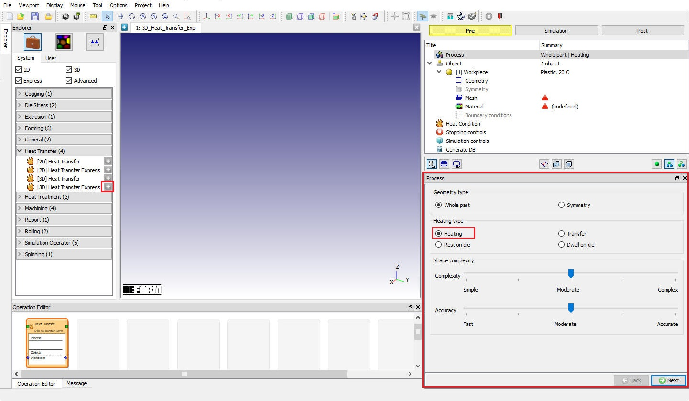
Added 3D Heat Transfer Express operation into operation editor
In Process window simulation modes such as Geometry Type, Heating Type and Shape Complexity and Accuracy has to set for the heat transfer operation as shown in Fig. 36.2.1.
Geometry Type
In Heat Transfer Express 3D Full and Symmetry geometry models can be setup by selecting the respective geometry type radio buttons Whole part or Symmetry.
When the workpiece is asymmetric or need to study any asymmetric behavior during heat transfer and future forming operations then user has to select the Whole part geometry model type.
If the workpiece is symmetric then user can select the Symmetric geometry type to setup the symmetric problem model, this adds the symmetry plane selection window after workpiece geometry window. In symmetry window user has to select symmetry
planes to fix the velocity along the symmetric plane.
There are four heating types or heat transfer operations available in both 2D and 3D Heat Transfer Express operation those are (See Fig. 36.2.1.),
Heating
Transfer
Rest on die and
Dwell on die
Heating workpiece, heat transfer during transferring workpiece form furnace to press, resting workpiece on die (before forming) and workpiece dwell on die after forming operations can be setup easily by using the respective heating type. For more details about these heating types are described in 36. Introduction to heat transfer express operation, refer Heating Types.
For resting and dwelling operation thermal calculation window will activate to give options to select heat transfer with dies and not to calculate heat transfer with dies. These options will be explained further in respective operations explanations.
Shape Complexity and Accuracy
The shape complexity and simulation accuracy slider bars (See Fig. 36.2.1.) influence the mesh settings and number of time steps used in the simulation. This in turn influences the run time and level of detail available in the simulation.
Shape Complexity:
Simple: The geometry of the objects are simple in nature. They require minimum number of elements, are easier to solve and takes less time.
Moderate: The geometry of the objects are moderate (not too complex) in nature.
Complex: The geometry of the objects are complex in nature.
Shape Accuracy:
Fast: Useful for fast evaluation of a process. In exchange for faster run times, there is a higher risk of missing important details.
Moderate: The simulation uses settings which attempt to balance calculation time and accuracy.
Accurate: Very detailed analysis of the process is done, which will generally capture minute details. Calculation time and storage requirements are more.
In heating or heat furnace operation, heating of billet in a furnace is modeled. After selecting the process settings system will gives the customized heating operation windows to guide the user to setup this operation. Only one object is allowed for this operation (See Fig. 36.2.2.) and that object will be added automatically. The default process settings will be added suited to heating operation.
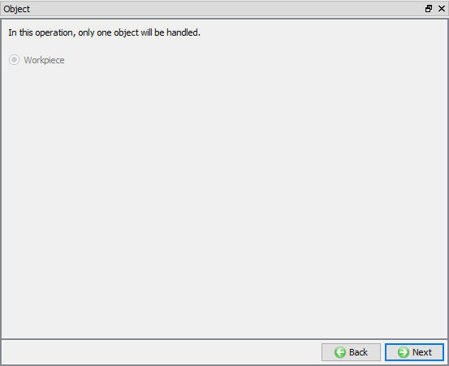
Heating operation object definition window
Object basic definition includes object name, type and temperature. In addition to this object state variable values can be initialized by using Advanced button and object data like geometry, mesh, boundary conditions and material can be imported from DEFORM .DB /.Key file. (See Fig. 36.2.3.)
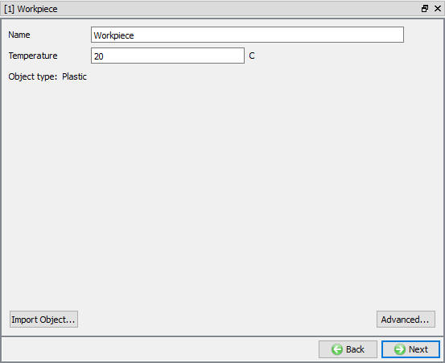
Workpiece window
Object Name: User can define the name for all the objects available in the operation.
Object Type: The object type (OBJTYP) defines if and how deformation is modeled for each individual object in a DEFORM problem. In Forming Express operation only two object type
are available those are Plastic and Rigid and those two are automatically predefined by object number, so workpiece will be plastic and dies will be rigid. More object types are available in Forming operation, for its details refer 11.4. Object Type
Plastic: Plastic objects are modelled as rigid-plastic or rigid-viscoplastic material depending on characteristics of materials. The formulation assumes that the material stress increases linearly with strain rate until a threshold
strain rate, referred to as the limiting strain rate (LMTSTR). The material deforms plastically beyond the limiting strain rate. The plastic material behaviour of the object is specified with
a material flow stress function or flow stress data (FSTRES). In heat transfer express workpiece is automatically assigned to Plastic object type.
Rigid: Rigid objects are modelled as non-deformable materials. In the deformation analysis, the object is represented by the geometric profile (DIEGEO). Deformation solution data
available for rigid objects include object stroke, load, and velocity. The mesh for the rigid object is used only for thermal, transformation, and diffusion calculations. In heat transfer express dies or tools are automatically assigned to Rigid
as they are non-deformable objects.
Note:
Should note that object type is predefined by object number in Heat transfer Express operation. For 1st object type will be plastic and for further addition only rigid objects will add.
There is an Import Object button on the Object page. This
is for importing complete object data from another DEFORM file.
Object Temperature: User can define the object temperature in the Temperature field of the respective object window as shown in Fig. 36.2.3.
Advanced Object Settings: The advanced setting Initialization options (See Fig. 36.2.4.) will be useful when user import
the object from previously run project or problem or when forming express operation is added after few other operations and if there is need to initialize few important state variables.
The user can initialize temperature, strain, velocity, damage
and displacement that has taken place in the deformable object using the advanced setting options. (See Fig. 36.2.4.)
Advanced object settings
More variables can be initialized in Forming operation, for detail refer 35. 2D Heat Transfer operation Initialize.
The average strain rate (AVGSTR) is a characteristic average value of the effective strain rate. An approximation of this value should be given at the start of the simulation.
The limiting strain rate (LMTSTR) defines a limiting value of effective strain rate below which a plastic or porous material is considered rigid and behaves as Newtonian fluid like material.
 : Using this user can rest back the initialized state variables value.
: Using this user can rest back the initialized state variables value.
For more Deformation object properties options available in Forming operation refer 16.1. Deformation Properties.
Geometry window is used to create the geometry of an object as shown in Fig. 36.2.5. Before creating geometry only Define Primitive Geometry option will be available but after creating geometry Check, Scale, Reverse, Fix and Mark surface geometry options will activate and after generating mesh Extract border option will activate.
Geometry definition window
Define primitive 
There are three primitive shapes in geometry primitives such as Box, Cylinder and Hollow Cylinder that can be used to generate geometries as shown in Fig. 36.2.6. In each case, the user has to scale appropriately to the problem by defining the dimensions. In addition to these primitives Extrude and Revolve can be used to convert 2D cross-section to 3D. Rotational symmetric objects are created by using the revolve angle option for cylinder, Hollow cylinder and Revolve primitives.
Geometry primitive window
Check 
Always check geometry. DEFORM has a checking algorithm that checks for number of invalid edges, invalid orientation, polygons with small area and number of surfaces. Every type of error cannot be detected.
Using this Check Geometry option opens the Geometry Checking Results window which gives a summary of the object’s geometry (See Fig. 36.2.7.). For an object that has a closed volume, there should be 1 surface, 0 free edges and 0 invalid entities (as circled below in Fig. 36.2.7.). Objects that are imported as surfaces and not solids will have a free edge but should still only have 1 surface.
Geometry Checking Results
Scale 
Geometry can be scaled in forming operation to accommodate thermal expansion by specifying the scaling factor. (See Fig. 36.2.8.) The scaling factor can be calculated by temperature differential and temperature dependent material data. The scaled geometry can be saved into different Geometry saving formats.
Scale Geo window
Reverse
This feature reverses the surface/ normal of the geometry. Always surface/ Normal of the geometry should be outwards.
Fix 
This feature will handle geometric problems where there are either multiple surfaces or open (holes) regions by deleting any extra surfaces and filling holes. For minor or localized problems, this works well. For more troublesome file such as this one, the repair may not produce a desirable result. (See Fig. 36.2.9.)
Fixing Geometry of crankshaft Die
Mark Surface
Marking any surface takes it out of any contact calculations during the simulation. Even if workpiece comes in contact with that object, normally applied for die/punch surfaces where in practical scenario contacts wont form to avoid the unintended contact calculations.
Other Geometry options
Show geometry inside mark: Checking this option enables the Geometry orientation display.
Define reference point: User can select the geometry reference point by clicking on this button from display window. This reference point is required to define the distance between objects stopping controls stopping controls.
Import Geometry from a file  : It imports the geometry from a file
: It imports the geometry from a file
Load Geometry from Library  :It imports geometry from Library
:It imports geometry from Library
Save the Geometry to a file  : It saves the Geometry to a file.
: It saves the Geometry to a file.
Save Geometry to Library  : User can save geometry to the library using this option.
: User can save geometry to the library using this option.
Delete Geometry  : user can delete the geometry.
: user can delete the geometry.
Symmetry window comes after the geometry window if symmetry geometry type is selected by user. Symmetry to be defined to fix the velocity of nodes on symmetry planes as shown in Fig. 36.2.10. First user need to select the symmetry plane by left mouse click, the selected plane will turn green and click on  button to add selected plane, for more than one symmetry plane repeat
the same steps. For the selected plane system display center and normal as shown in Fig. 36.2.10.
button to add selected plane, for more than one symmetry plane repeat
the same steps. For the selected plane system display center and normal as shown in Fig. 36.2.10.
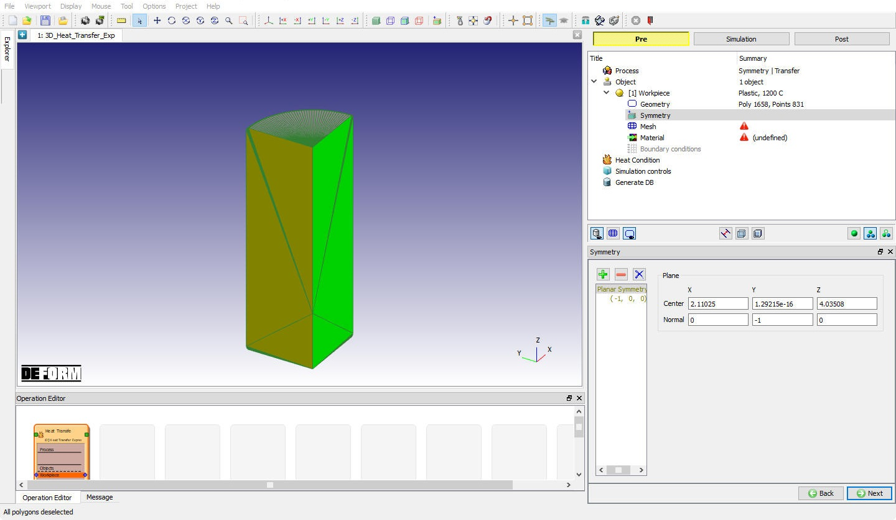
Symmetry plane definition window
The Mesh Generation window allows the user to generate a mesh for the current object. Below Fig. 36.2.11. shows the Mesh generation window in system mode. In this mode system automatically sets the number of mesh elements based on the shape complexity and accuracy setting selection in process window.
System Mode
Using  user has to generate tetrahedron mesh for an objects. User can generate the
user has to generate tetrahedron mesh for an objects. User can generate the
surface mesh or mesh preview quickly before generating
the solid mesh required for an object by using  button. Once the user is satisfied with the preview of surface mesh, the mesh can be generated on an object by clicking
button. Once the user is satisfied with the preview of surface mesh, the mesh can be generated on an object by clicking  .
.
After generating the mesh  mesh button will get activate, this is useful to delete the current mesh of an object. For varying the auto calculated number of elements and advanced settings
user has to go for User Defined Mode.
mesh button will get activate, this is useful to delete the current mesh of an object. For varying the auto calculated number of elements and advanced settings
user has to go for User Defined Mode.
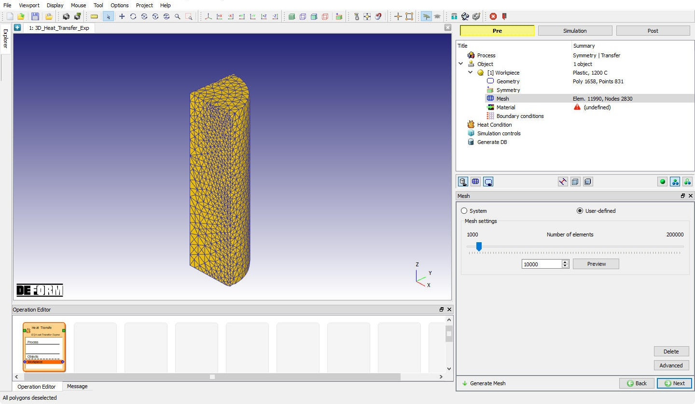
Mesh settings window in System mode
User Defined Mode
For user defined mesh mode option see Fig. 36.2.12., in this mode user can vary number of elements by adjusting the slider bar
and use advanced options to change the Size ratio, Minimum elements size, Remesh criteria and Boolean operation. User can generate the surface mesh to observe mesh preview, once the user is satisfied with surface mesh user can generate the solid mesh
for 3D object by clicking  button.
button.
Number of elements (MGNELM):
The number of mesh elements represents the approximate number of elements that will be generated by the system. The Automatic Mesh Generator (AMG) takes the value for MGNELM and generates a mesh that will contain approximately the same number of elements. The number of elements can be specified merely by adjusting the slider bar and selecting an appropriate value for the current simulation.
The error between the number of specified elements and the number of generated elements is typically about ten percent.
For more mesh settings user has to select  button.
button.
User defined mode mesh settings
Advanced Mesh Options
General Mesh Settings: Within DEFORM, there are two different types of mesh that can be generated for 3D objects.
Relative Mesh: Using the relative mesh setting, the user specifies the number of solid elements to be generated. No matter how complex the shape of the part gets, the number of elements will remain essentially constant. ( Fig. 36.2.13.)
Relative mesh settings
Absolute Mesh: Using the absolute mesh setting, the user specifies the size of the elements and the system determines the total number of elements that are required based on the size of the element specified and geometry. As part complexity increases, the number of elements tends to increase. ( Fig. 36.2.14.)
Absolute mesh settings
Element size ratio (MGSIZR) : The maximum size ratio between elements is one of several ways to control the mesh density during automatic mesh generation (AMG) by specifying the ratio of node densities. For a value of 3 for MGSIZR, the largest element edge on an object will be roughly 3 times the size of the smallest element edge on the same object. If equal sized elements are desired, then Size Ratio = 1. If Size Ratio = 0, the element size ratio will not be a factor in the mesh density distribution.
Remeshing criteria :
Remeshing Criteria (Autoremesh) is the most convenient way to handle the remeshing of objects undergoing large plastic deformation. The Remeshing Criteria Window (See Fig. 36.2.14.) contains a group of parameters that control when and how often the mesh will be regenerated on a meshed object based on assignment of certain triggers. There are four keywords that control the initiation of a remeshing procedure for an object, they are Interference Depth (RMDPTH), Max. Time Increment (RMTIME), Max. Step Increment (RMSTEP) and Max. Stroke Increment (RMSTRK). When the remeshing criteria of any of these keywords has been fulfilled or the mesh becomes unusable (negative Jacobian), the object will be remeshed, the solution information from the old mesh is interpolated onto the new mesh and the simulation continues.
Penetration Distance (relative)
If a negative number (a fraction) is entered, the program will conduct a check on each surface edge that has a contact node on each end. The distance from the middle of the edge to the die surface is calculated and divided by the original length of the edge. If the ratio exceeds the magnitude of the specified value, remeshing will be triggered.
Maximum stroke increment (RMSTRK)
Anytime the maximum stroke increment (RMSTRK) is exceeded by the stroke increment of the primary die since the last remeshing step, a new remeshing step will be initiated.
Maximum time increment (RMTIME)
Anytime the Maximum Time Increment (RMTIME) (Value of Elapsed Time) has elapsed since the last remeshing step, a new remeshing step will be initiated.
Maximum step increment (RMSTEP)
Anytime the Maximum Step Increment (Number of Steps) has occurred since the last remeshing step, a new remeshing step will be initiated.
Delete Mesh 
Deletes the mesh generated for the object.
More mesh options like Coating mesh, System mesh density weighting factors, User Mesh Density Window options are not available in Forming express operation unlike in Forming operation, for those mesh options refer chapter 13.2. 3D Tet Mesh Generation.
Below Fig. 36.2.15. shows the material window. User can add or import material from a keyword file or load from DEFORM material library.
After loading system automatically assign the loaded material to an object. User can also edit the material properties using  button.
button.
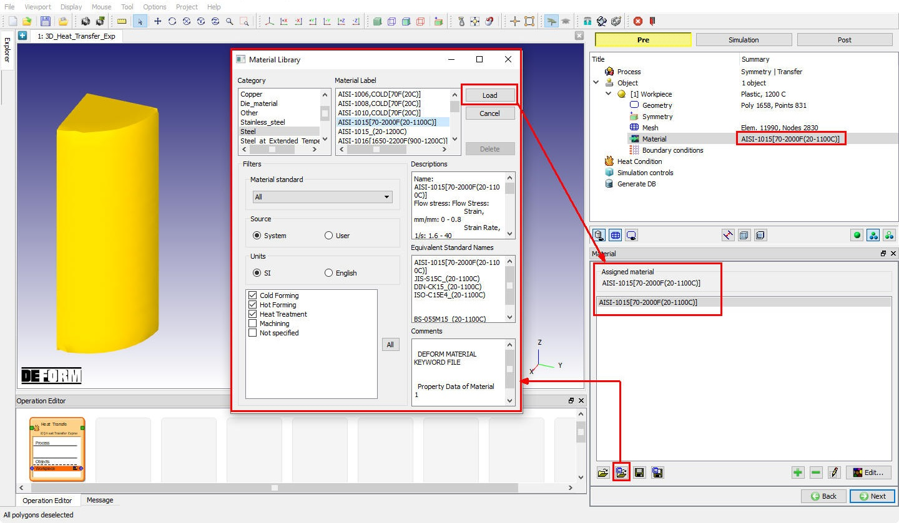
Material window
Once after adding material click on  button, material window will open as shown in Fig. 36.2.16.
button, material window will open as shown in Fig. 36.2.16.
Material editing window
The properties required are dependent on the physical effects being simulated in DEFORM. The material properties that the user is required to specify is a function of the material types that the user is utilizing in the simulation. In Forming operation user can get access to all material properties for more information refer 10. Material Data.
In Forming express Boundary conditions window, user can assign only Planar symmetry, Deformation velocity, Thermal Heat exchange with Environment and Temperature boundary constraints for an object. Boundary conditions specify how the boundary of an object interacts with other objects and with the environment. The most commonly used boundary conditions are heat exchange with the environment for simulations involving heat transfer, prescribed symmetry plane for enforcing symmetry in the model. Fig. 36.2.17. shows various BCC that can be assigned to an object.
By default planar symmetry planes will be added for workpiece object as per the symmetry plane selection in symmetry window as shown in Fig. 36.2.17. and also heat exchange with environment will be assigned to all surfaces except the symmetric planes for warm and hot forging process as shown in Fig. 36.2.18.
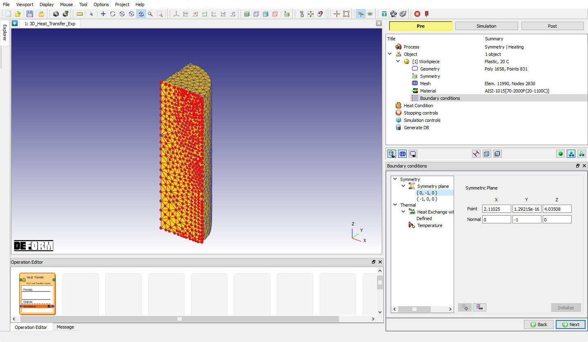
Symmetry boundary condition assigned for workpiece
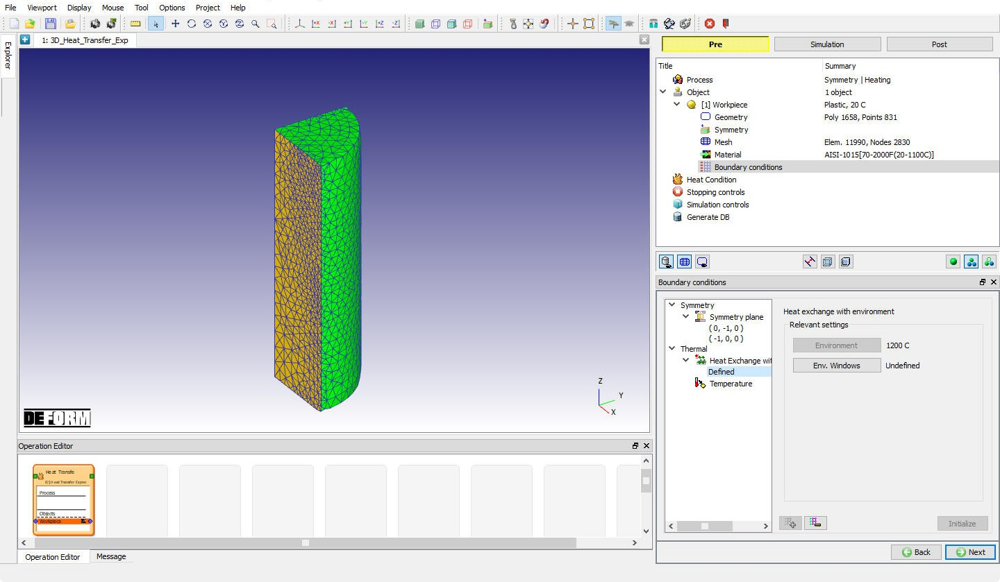
Heat exchange with environment boundary condition assigned for workpiece
More BCC’s options under different categories are available in Pre-Processor and Forming Operation such as Deformation,Thermal, Diffusion and Heating. For more information about these BCC's please refer 14. Boundary Conditions.
Heat conditions like Heating time (Process duration), Environment temperature and Convection coefficient has be defined in this window as shown in Fig. 36.2.19. For all heating types system by default define the heating conditions has to input the process settings data by changing the defaults.
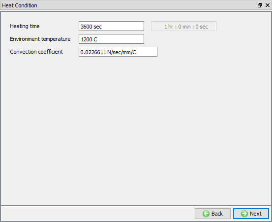
Heat condition settings window
Only for heating operation heat transfer operation provides the stopping controls to stop the simulation when all nodes of the workpiece are within the specified degree range from the set point temperature or environment temperature as shown in Fig. 36.2.20. In Fig. 36.2.20. simulation stops if all nodes temperatures are within 1199.5 °C to 1200.5 °C.
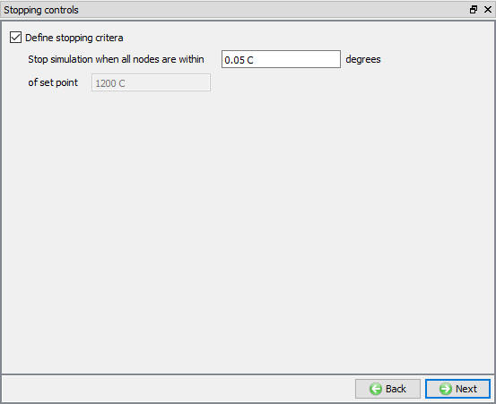
Heating stopping controls window
The DEFORM system solves time dependent non-linear problems by generating a series of FEM solutions at discrete time increments. At each time increment, the velocities, temperatures and other key variables of each node in the finite element mesh are determined based on boundary conditions, thermo mechanical properties of the work piece materials and possibly solutions at previous steps. Other state variables are derived from these key values and updated for each time increment. The length of this time step and number of steps simulated are determined based on the information specified in the step controls menu. Fig. 36.2.21. shows simulation control options.
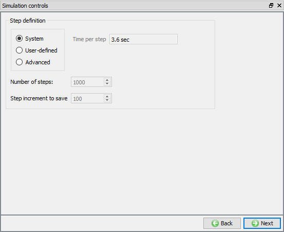
Simulation controls window in system definition
User needs to specify the time per step (step definition), total number of steps and step increment to save in user and system step definition. In heat transfer express three types of step definitions are available, those are system, user and auto.
System type (See Fig. 36.2.21.) step definition auto calculate the step definition based on the heating time defined and accuracy and complexity settings selected. For different accuracy and complexity settings system will vary the object mesh elements and step size by varying number of steps. If user needs to vary the auto calculated step definition then User type allows to change the step definition.
In User type user will get the access to change the step definitions as required as shown in Fig. 36.2.22.
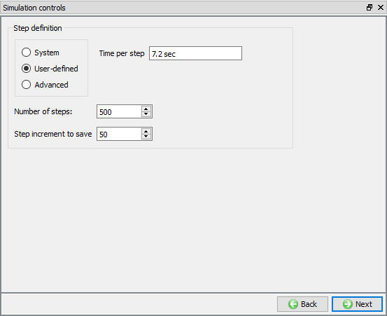
User step definition controls
Auto type is temperature based step controls, the DTPMAX settings control the time stepping. The purpose for these controls is to specify the time stepping of a simulation that is driven by thermal-induced deformation. User has to specify the Initial time step (Time per step), Max. Temperature change per step, Min. time per step and Max. time per step as shown in Fig. 36.2.23.
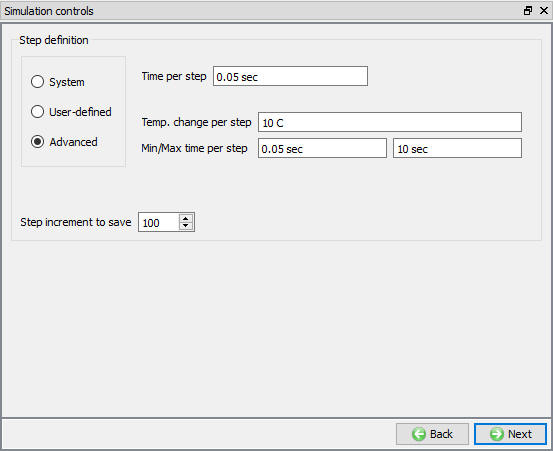
Advanced step definition controls
Temperature change per step (DTPMAX) [2D, 3D]:
The maximum temperature change increment limits the amount that the temperature of any node can change during one time step. If a non-zero value is assigned, a new sub step will be initiated when the temperature change at any node reaches the value of DTPMAX. The maximum/minimum time step are the largest and smallest time step allowable with the temperature based sub-stepping.
Check Data 
It checks the Data. If Data is correct we can generate DB. But while checking Data if it gives any errors or warnings then it should be corrected before generating Database. Errors will not allow the database to be generated while warnings will allow the DB to be generated.
Generate Database 
By clicking on this button, it generated the Database for the setup. (See Fig. 36.2.24.)
Generate Database window
Heat Transfer operation is used to setup the air convection operation normally during the transfer of workpiece from furnace to press. User can add this operation after heating operation or start with heated workpiece heat transfer itself as first operation. In Transfer operation user will be guided by setup windows as in Heating operation except heating Stopping controls as shown in Fig. 36.2.25. For basic object definition, geometry, mesh, material and boundary condition details refer Defining Heating operation. In addition to heating operation options user can add more than one object, so it adds object positioning and inter-object definition options. These options are discussed under this section.
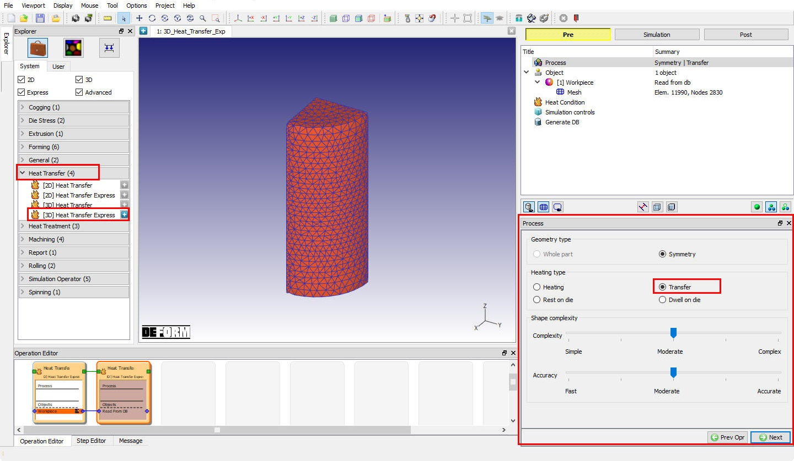
Add Heat transfer operation after furnace heating
In Heat Transfer operation more than one object is allowed. The user can select the number of objects that is required to perform the operation from this window depending on the process set up (See Fig. 36.2.26.). User has to note that we can have only one plastic object in a simulation. A maximum of 100 dies can be added.
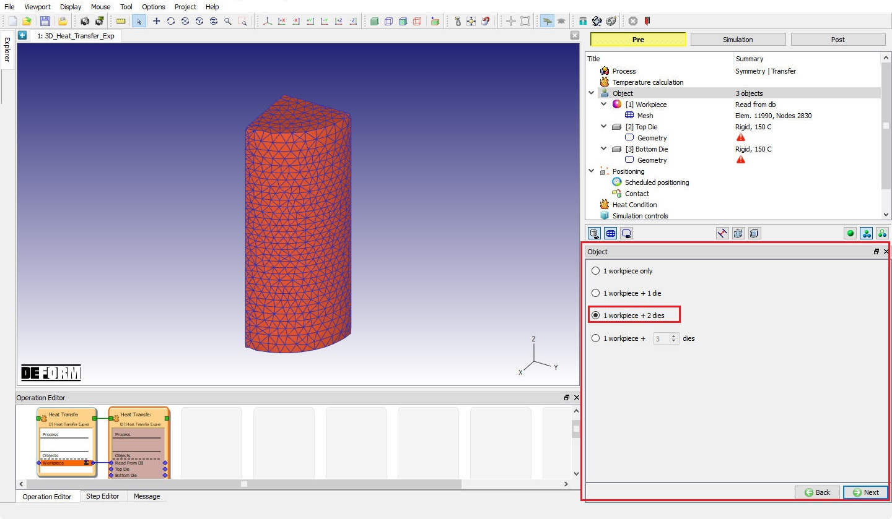
Transfer operation object selection settings
If user selects more than one object then system adds the controls (positioning) and scheduled positioning and contact windows after objects to position the objects and to generate inter object contact if any in the setup. More details about these options refer Defining Rest on die operation section Positioning and Scheduled Positioning.
Heat conditions like Transfer time (Process duration), Environment temperature and Convection coefficient has be defined in this window as shown in Fig. 36.2.27. For all heating types system by default define the heating conditions, user has to input the process settings data by changing the defaults.
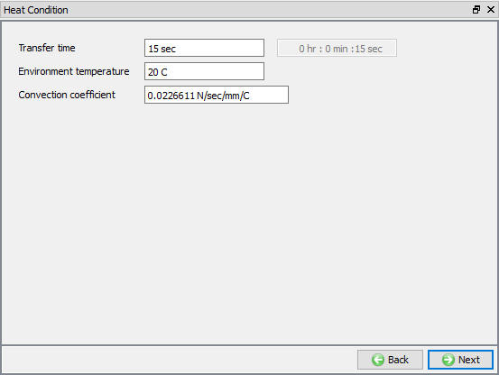
Transfer operation heat conditions
After setting the heat condition user has to define the simulations controls for simulation controls settings details refer Simulation Controls Definition.
Next Database has to be generated in case interactive setup or if the transfer operation is first operation, otherwise database will automatically generate during simulation. For more information on simulation controls and Database generation refer Simuation controls Definition and Generate Database section.
Rest on die or Resting operation is used to setup the hot workpiece heat transfer with environment and with die on which it is resting before forming. User can add this operation after heat transfer operation or can start with heated workpiece resting operation itself as first operation. In Resting operation user will be guided by setup windows as in Heating operation except heating Stopping controls as shown in Fig. 36.2.28. In addition to heating operation options user can add more than one object, so it adds thermal calculation, object positioning and inter-object definition options. These options are discussed under this section.
By default system will add two die objects and thermal calculations selection option gets added after process window as shown in Fig. 36.2.28.
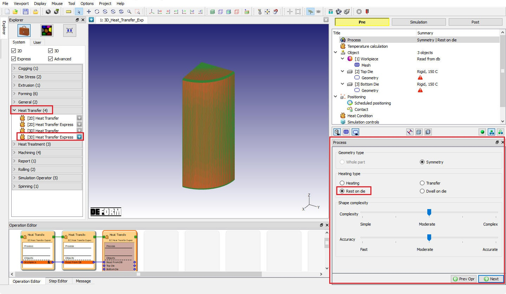
Adding Resting operation after heat transfer operation
Temperature Calculation (See Fig. 36.2.29.) window gives Non isothermal options to select calculate temperature only in workpiece or workpiece and dies.
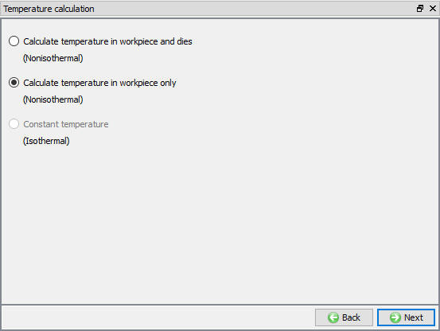
Temperature calculation type selection window
Non-isothermal: A process in which the temperature of system is not constant. Adding temperature calculations will improve material flow predictions and load predictions, particularly in processes where there are substantial changes in temperature. Calculating temperature in tools further improves workpiece temperature calculation, because evolving tool temperature influences heat loss from the workpiece.
The user can select the number of objects that is required to perform the operation from this window depending on the process set up (See Fig. 36.2.30.). User has to note that we can have only one plastic object in a simulation. A maximum of 100 dies can be added.
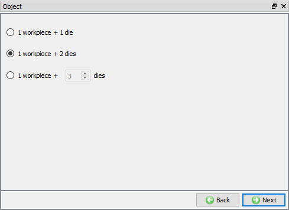
Objects selection window
For basic object definition, geometry, mesh, material and boundary condition details refer 36.2.4. Defining Heating operation.
User has to select position objects button to position the objects as per the setup requirements, if objects are not read from DB as shown in Fig. 36.2.31. For more details about positioning options refer 19.Object Positioning. If objects are read from DB then those objects positioning must be scheduled.
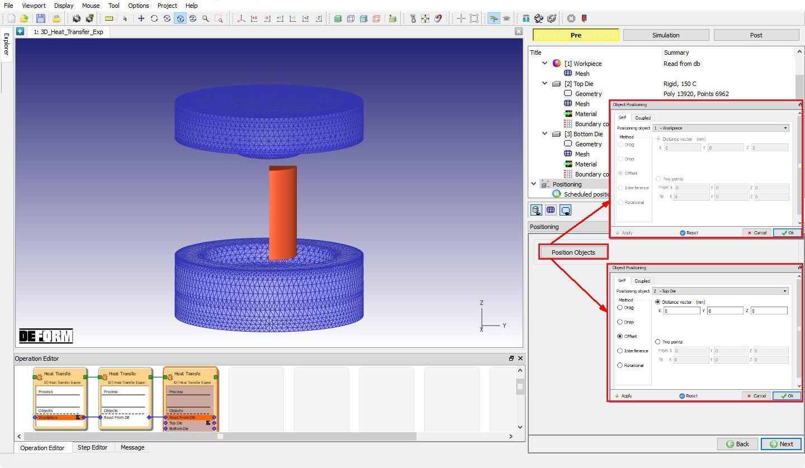
Positioning Objects window settings for Read from DB and other object types
When user is not sure about the location of an object as in case of Read From DB objects, scheduled positioning will help to position the objects accurately.
Schedule positioning allows the user to define the positioning for objects in MO setup for successive operations for which DB is not generated so that the objects will position before generation of DB while running simulation in Batch mode. (See Fig. 36.2.32.)
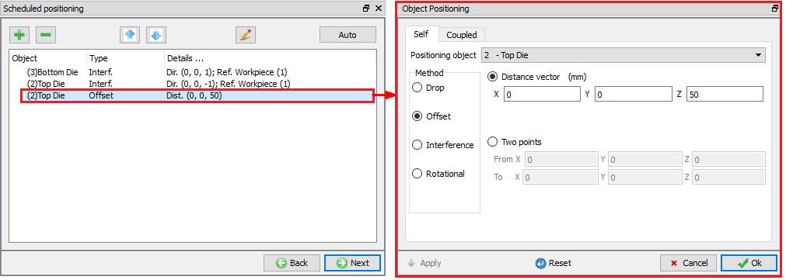
Schedule position the objects in successive operations
The purpose of inter-object relations is to define how the different objects in a simulation interact with each other. All objects which may come in contact with each other through the course of the simulation must have a contact relation defined. In Heat transfer express system automatically define the relation between the workpiece and dies and self contact for workpiece then generate contact when user click on as shown in Fig. 36.2.33. Generated contacts message will display in the message tab below the graphics window.
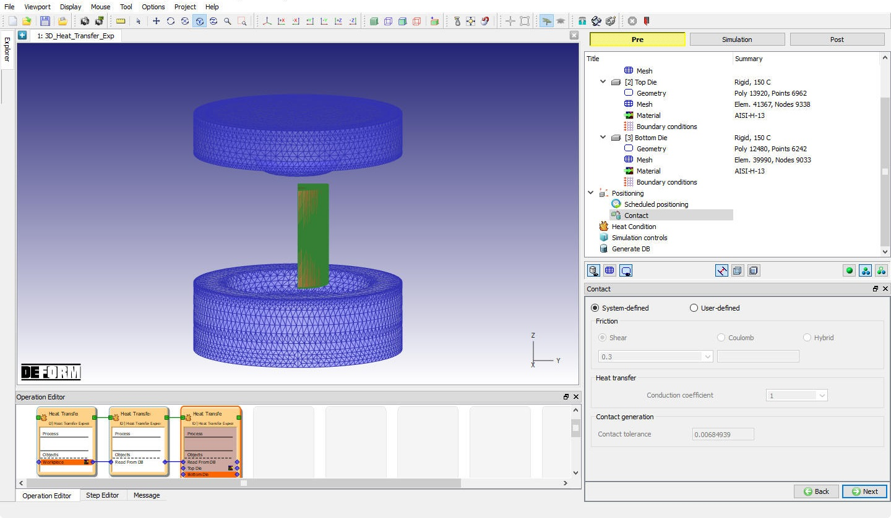
Inter-object contact generation window settings in batch mode
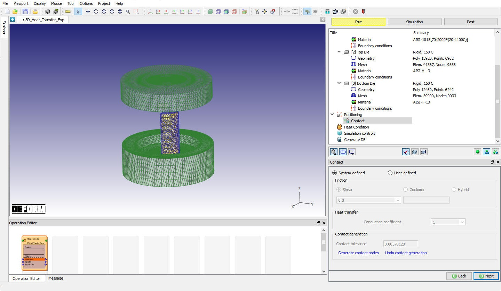
Inter-object contact generation window settings in interactive mode (or for first
operation)
In case if heat transfer express operation is a successive operation then in batch mode system schedule the defining and generating contacts by initializing previous contacts while running, so generate and initialize contact nodes and restore mesh options not available as shown in Fig. 36.2.34. User can select the tolerance value for contact generation by selecting the User defined radio button.
Conduction heat transfer coefficient value can be defined by user and also typical values are provided by system those are, (See Fig. 36.2.33.)
(1 N/sec/mm/C or 0.0003 Btu/sec/in^2/F) for Free Resting
(1 N/sec/mm/C or 0.0003 Btu/sec/in^2/F) for Dwelling
(11 N/sec/mm/C or 0.004 Btu/sec/in^2/F) for Forming
Heat conditions like Resting time (Process duration), Environment temperature and Convection coefficient has be defined in this window as shown in Fig. 36.2.35. For all heating types system by default define the heating conditions, user has to input the process settings data by changing the defaults.
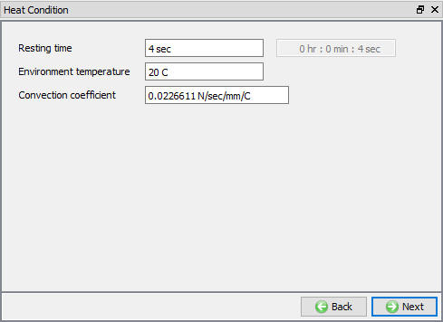
Heat condition settings window
After setting the heat condition user has to define the simulations controls for simulation controls settings details refer Simulation Control Definition.
Next Database has to be generated in case interactive setup or if the transfer operation is first operation, otherwise database will automatically generate during simulation. For more information on simulation controls and Database generation
refer Simuation controls Definition and Generate Database section.
After the Heat transfer express operations user can add the forming operations (See Fig. 36.2.36.) and continue with the non-isothermal deformation setup. Heat transfer operations can also be added between the forming operations, especially after forming operation customized Heat Dwelling heating type available for dwelling simulation explained in the next section Defining dwell on die operation. For more information about forming operations setup refer 3D Forming Setup or 3D Forming Express setup.
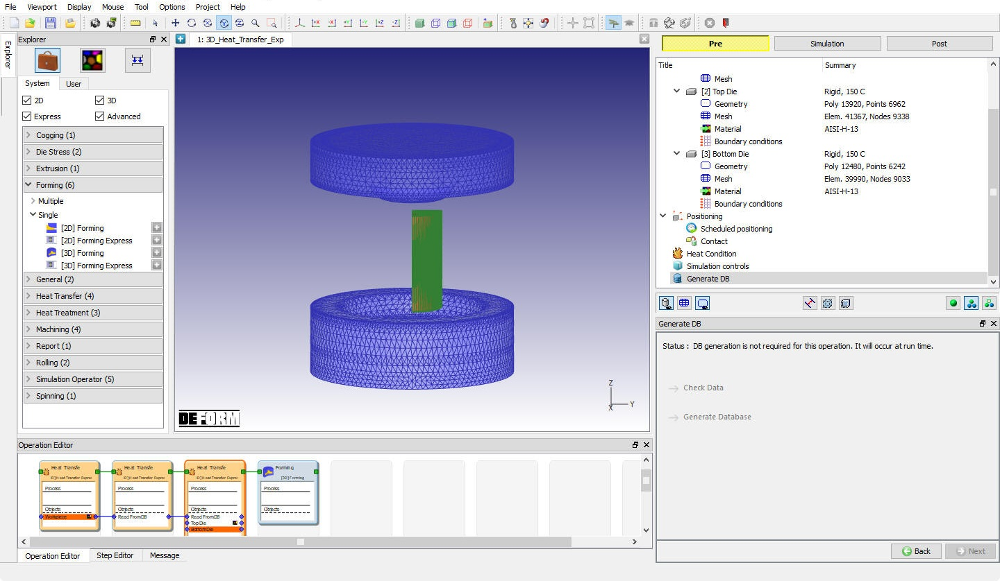
Adding Forming operation after heat transfer express operation
Dwell on die or Dwelling operation is used to setup the hot workpiece heat transfer with environment and with die after forming and before die retract back from workpiece. User has to add this operation after forming operations as shown in Fig. 36.2.37.
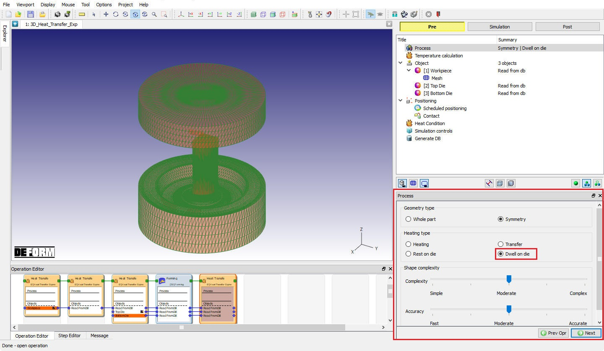
Adding Heat transfer express operation after forming operation for dwelling operation
setup
In Dwelling operation user will be guided by setup windows as in Heating operation except heating Stopping controls as shown in Fig. 36.2.20. In addition to heating operation more than one objects are allowed and system automatically pass all the objects from previous operation to this operation. This operation also adds thermal calculation, object positioning and inter-object definition options required to select the thermal calculations for dies, position objects and define and generate the inter-object contact conditions. These additional options other than heating operation options are discussed in 36.2.6. Defining Rest on die Operation.
Heat conditions like Dwell time (Process duration), Environment temperature and Convection coefficient has be defined in this window as shown in Fig. 36.2.38. For all heating types system by default define the heating conditions, user has to input the process settings data by changing the defaults.
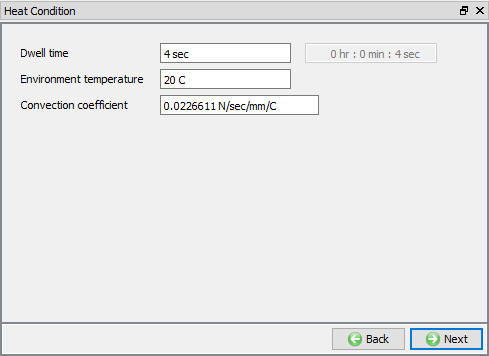
Heat condition settings window
After setting the heat condition user has to define the simulations controls for simulation controls settings details refer Simulation Control Definition.
Next Database has to be generated in case interactive setup or if the transfer operation is first operation, otherwise database will automatically generate during simulation. For more information on simulation controls and Database generation
refer Simuation controls Definition and Generate Database section.
Related Topics:
2D Heat Transfer Express Operation